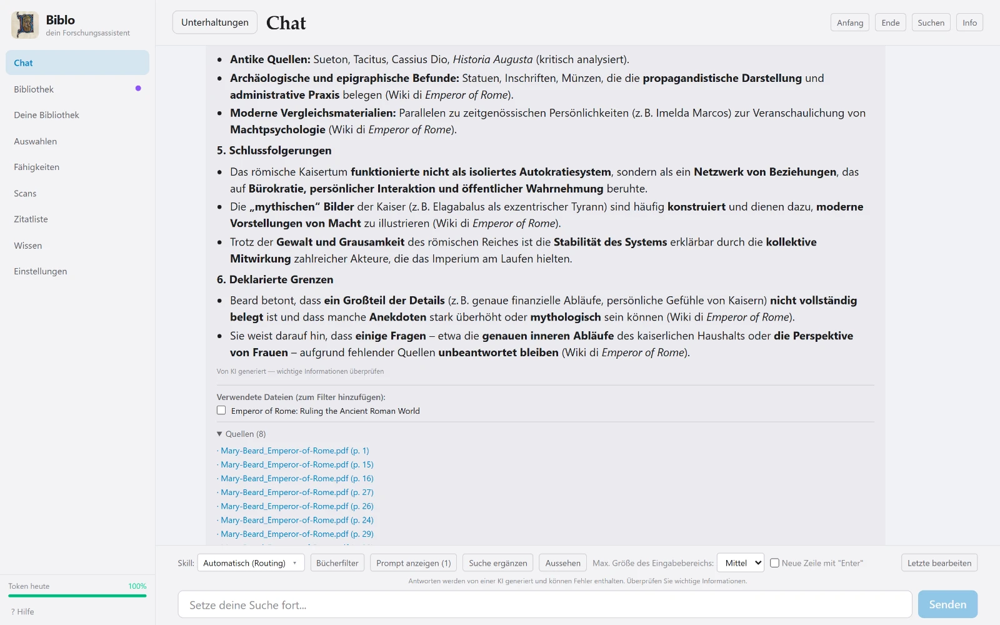

Chat
Antworten mit Quellen
Der Chat antwortet nicht einfach: Er listet die verwendeten Dateien und die zitierten Stellen mit Seitenzahl auf. Von dort öffnen Sie das PDF oder haken Dokumente an, um nur mit diesen weiterzuarbeiten.
